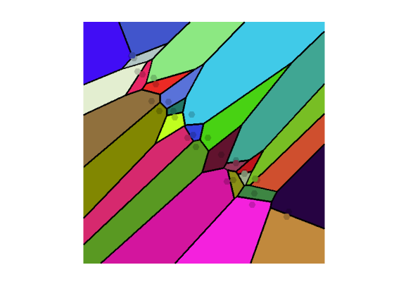
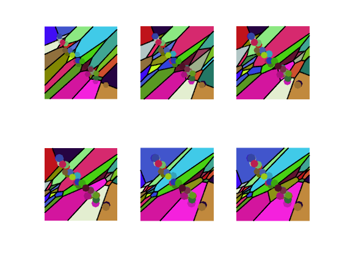
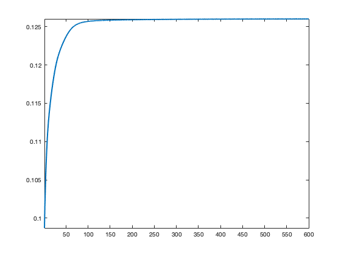
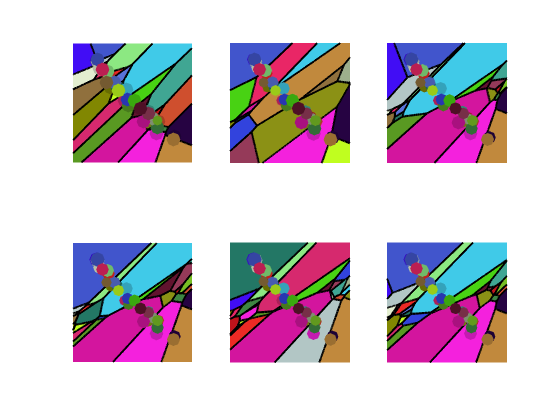
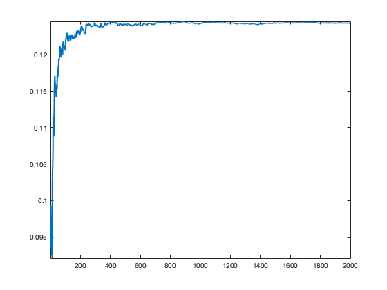
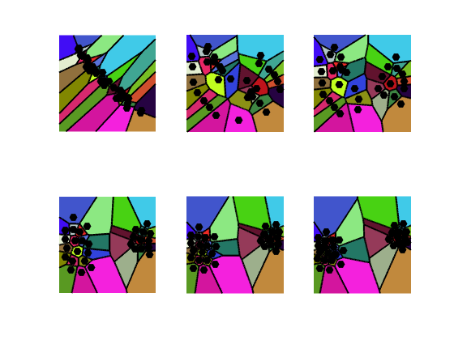
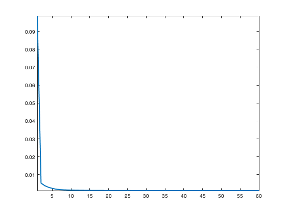

Semi-discrete Optimal Transport
This numerical tour studies semi-discrete optimal transport, i.e. when one of the two measure is discrete. It is not inteded to show efficient algorithm but only conveys the main underlying idea (c-transform, Laguerre cells, connexion to optimal quantization). In the Euclidean case, there exists efficient algorithm to compute Laguerre cells leveraging computational geometry algorithm for convex hulls.
Contents
Dual OT and c-transforms
The primal Kantorovitch OT problem reads \[ W_c(\al,\be) = \umin{\pi} \enscond{\int_{\Xx \times \Yy} c(x,y) \text{d}\pi(x,y)}{ \pi_1=\al,\pi_2=\be }. \] It dual is \[ W_c(\al,\be) = \umax{f,g} \enscond{ \int_\Xx f \text{d} \al + \int_\Yy g \text{d} \be }{ f(x)+g(y) \leq c(x,y) }. \]
We consider the case where \(\al=\sum_i a_i \de_{x_i}\) is a discrete measure, so that the function \(f(x)\) can be replaced by a vector \((f_i)_{i=1}^n \in \RR^n\). The optimal \(g(y)\) function can the be replaced by the \(c\)-transform of \(f\) \[ f^c(y) \eqdef \umin{i} c(x_i,y) - f_i. \]
The function to maximize is then \[ W_c(\al,\be) = \umax{f \in \RR^n} \Ee(f) \eqdef \sum_i f_i a_i + \int f^c(y) \text{d}\be(y). \]
Semi-discret via Gradient Ascent
We now implement a gradient ascent scheme for the maximization of \(\Ee\). The evaluation of \(\Ee\)) can be computed via the introduction of the partition of the domain in Laguerre cells \[ \Yy = \bigcup_{i} L_i(f) \qwhereq L_i(f) \eqdef \enscond{y}{ \forall j, c(x_i,y) - f_i \leq c(x_j,y) - f_j }. \] Where \(f=0\), this corrsponds to the partition in Voronoi cells.
One has that \(\forall y \in L_i(f)\), \(f^c(y) = c(x_i,y) - f_i\), i.e. \(f^c\) is piecewise smooth according to this partition.
The grid for evaluation of the "continuous measure".
p = 500; % size of the image for sampling, m=p*p
t = linspace(0,1,p);
[V,U] = meshgrid(t,t);
Y = [U(:)';V(:)'];
First measure, sums of Dirac masses \(\al = \sum_{i=1}^n a_i \de_{x_i}\).
n = 30; X = .5+.5i + exp(1i*pi/4) * 1*( .1*(rand(1,n)-.5)+1i*(rand(1,n)-.5) ); X = [real(X);imag(X)]; a = ones(n,1)/n;
Second measure \(\be\), potentially a continuous one (i.e. with a density), mixture of Gaussians. Here we discretize \(\beta = \sum_{j=1}^m b_j \de_{y_j}\) on a very fine grid.
Z = {[.6 .9] [.4 .1]}; % mean
S = [.07 .09]; % variance
W = [.5 .5];
b = zeros(p); % ones(p)*.01;
for i=1:length(Z)
z = Z{i};
s = S(i);
b = b + W(i) * exp( (-(U-z(1)).^2-(V-z(2)).^2)/(2*s^2) );
end
b = b/sum(b(:));
Display the two measures.
Col = rand(n,3); clf; hold on; imagesc(t,t,-b); s = 60*ones(n,1); % size scatter( X(2,:), X(1,:), s, .8*Col, 'filled' ); axis equal; axis([0 1 0 1]); axis off; colormap gray(256);

Initial potentials.
f = zeros(n,1);
compute Laguerre cells and c-transform
D = sum(Y.^2)' + sum(X.^2) - 2*Y'*X - f(:)'; [fC,I] = min(D,[], 2); I = reshape(I, [p p]);
Dual value of the OT \(\dot{f}{a}+\dotp{f^c}{\be}\).
OT = sum(f.*a) + sum(fC.*b(:));
Display the Laguerre call partition (here this is equal to the Vornoi diagram since \(f=0\)).
clf; hold on; imagesc(t,t,I); axis image; axis off; contour(t,t,I, -.5:n+.5, 'k', 'LineWidth', 2); colormap(Col); scatter( X(2,:), X(1,:), (1+(f-min(f))*10)*100, Col*.8, 'filled' );
Where \(\be\) has a density with respect to Lebesgue measure, then \(\Ee\) is smooth, and its gradient reads \[ \nabla \Ee(f)_i = a_i - \int_{L_i(f)} \text{d}\be(x). \]
% sum area captured
r = sum(sum( ( I==reshape(1:n,[1 1 n]) ) .* b, 1 ),2); r = r(:);
nablaE = a-r(:);
Exercice 1: (check the solution) Implement a gradient ascent \[ f \leftarrow f + \tau \nabla \Ee(f). \] Experiment on the impact of \(\tau\), display the evolution of the OT value \(\Ee\) and of the Laguerre cells.
exo1;
Display the evolution of the estimated OT distance.
clf; plot(1:niter, E, 'LineWidth', 2); axis tight;
Stochastic Optimization
The function \(\Ee\) to minimize can be written as an expectation over a random variable \(Y \sim \be\) \[ \Ee(f)=\EE(E(f,Y)) \qwhereq E(f,y) = \dotp{f}{a} + f^c(y). \]
One can thus use a stochastic gradient ascent scheme to minimize this function, at iteration \(\ell\) \[ f \leftarrow f + \tau_\ell \nabla E(f,y_\ell) \] where \(y_\ell \sim Y\) is a sample drawn according to \(\be\) and the step size \(\tau_\ell \sim 1/\ell\) should decay at a carefully chosen rate.
The gradient of the integrated functional reads \[ \nabla E(f,y)_i = a - 1_{L_i(f)}(y), \] where \(1_A\) is the binary indicator function of a set \(A\).
Initialize the algorithm.
f = 0;
Draw the sample.
i = (rand<W(1))+1; % select one of the two Gaussian
y = [S(i) * randn + Z{i}(1);S(i) * randn + Z{i}(2)];
Compute the randomized gradient
% detect Laguerre cell where y is [~,i] = min( sum(y.^2)' + sum(X.^2) - 2*y'*X - f(:)' ); % gradient nablaEy = a; nablaEy(i) = nablaEy(i) - 1;
Exercice 2: (check the solution) Implement the stochastic gradient descent. Test various step size selection rule.
exo2;
Display the evolution of the estimated OT distance (warning: recording this takes lot of time).
clf; plot(1:niter, E, 'LineWidth', 2); axis tight;
Optimal Quantization and Lloyd Algorithm
We consider the following optimal quantization problem \[ \umin{ (a_i)_i,(x_i)_i } W_c\pa{ \sum_i a_i \de_{x_i},\be }. \] This minimization is convex in \(a\), and writing down the optimality condition, one has that the associated dual potential should be \(f=0\), which means that the associated optimal Laguerre cells should be Voronoi cells \(L_i(0)=V_i(x)\) associated to the sampling locations \[ V_i(x) = \enscond{y}{ \forall j, c(x_i,y) \leq c(x_j,y) }. \]
The minimization is non-convex with respect to the positions \(x=(x_i)_i\) and one needs to solve \[ \umin{x} \Ff(x) \eqdef \sum_{i=1}^n \int_{V_i(x)} c(x_i,y) \text{d} \be(y). \] For the sake of simplicity, we consider the case where \(c(x,y)=\frac{1}{2}\norm{x-y}^2\).
The gradient reads \[ \nabla \Ff(x)_i = x_i \int_{V_i(x)} \text{d}\be - \int_{V_i(x)} y \text{d}\be(y). \] The usual algorithm to compute stationary point of this energy is Lloyd's algorithm, which iterate the fixed point \[ x_i \leftarrow \frac{ \int_{V_i(x)} y \text{d}\be(y) }{ \int_{V_i(x)} \text{d}\be }, \] i.e. one replaces the centroids by the barycenter of the cells.
Intialize the centroids positions.
X1 = X;
Compute the Voronoi cells \(V_i(x)\).
D = sum(Y.^2)' + sum(X1.^2) - 2*Y'*X1; [fC,I] = min(D,[], 2); I = reshape(I, [p p]);
Update the centroids to the barycenters.
A = ( I==reshape(1:n,[1 1 n]) ) .* b; B = ( I==reshape(1:n,[1 1 n]) ) .* b .* ( U+1i*V ); X1 = sum(sum(B,1),2) ./ sum(sum(A,1),2); X1 = [real(X1(:))';imag(X1(:))'];
Exercice 3: (check the solution) Implement Lloyd algortihm.
exo3;
Display the evolution of the estimated OT distance.
clf; plot(1:niter, E, 'LineWidth', 2); axis tight;
References
- Vladimir Oliker and Laird D Prussner. On the numerical solution of the equation \(\frac{\partial^2 z}{\partial x^2} \frac{\partial^2 z}{\partial y^2} - \pa{\frac{\partial^2 z}{\partial x\partial y}}^2 = f \) and its discretizations, I. Numerische Mathematik, 54(3):271-293, 1989.
- Quentin Mérigot. A multiscale approach to optimal transport. Comput. Graph. Forum, 30(5):1583-1592, 2011.
- Bruno Lévy. A numerical algorithm for l2 semi-discrete optimal transport in 3d. ESAIM: Mathematical Modelling and Numerical Analysis, 49(6):1693-1715, 2015.
- Franz Aurenhammer, Friedrich Hoffmann, and Boris Aronov. Minkowski-type theorems and least-squares clustering. Algorithmica, 20(1):61-76, 1998.
- Franz Aurenhammer. Power diagrams: properties, algorithms and applications. SIAM Journal on Computing, 16(1):78-96, 1987.
- Guillermo Canas, Lorenzo Rosasco, L. Learning probability measures with respect to optimal transport metrics. In Advances in Neural Information Processing Systems, pp. 2492--2500, 2012.
- Peter M. Gruber. Optimum quantization and its applications. Adv. Math, 186:2004, 2002.
- Lloyd, Stuart P. (1982), "Least squares quantization in PCM", IEEE Transactions on Information Theory, 28 (2): 129?137,
- Aude Genevay, Marco Cuturi, Gabriel Peyré, and Francis Bach. Stochastic oppmization for large-scale optimal transport. In Advances in Neural Information Processing Systems, pages 3440-3448, 2016.